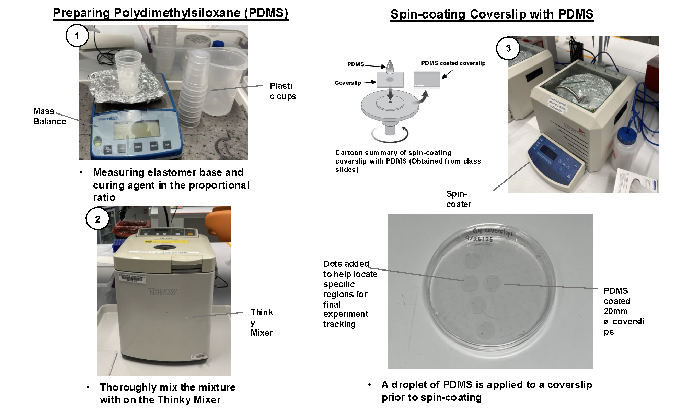

The scope of bioengineering can span many scales— but what happens when we focus on fabrication at the level of individual cells?
For my final project in my Cellular Engineering class, I investigated collective cell migration during gap closure.
Cellular engineering is a rigorous, graduate level undergraduate class focused on using modern lab techniques to manipulate cell behavior.
I took this class during my senior year at Harvard.
On this page, I document the lab skills I acquired throughout the course, along with the final project in which I investigated collective cell migration during gap closure across various geometries.
LAB TECHNIQUES
Throughout the course, we gained hands-on experience with fundamental tissue culture techniques, primarily working with human normal dermal fibroblasts (HNDF) and human umbilical vein endothelial cells (HUVEC). This consisted of being responsible for the maintanance and upkeep of both lines of cells throughout the semester.
1: WOUND HEALING ASSAY
With these cells, we first performed a wound healing (scratch) assay, allowing both cell lines to grow to full confluency before creating a scratch. These wounds were then imaged over the course of three days at 40x magnification to quantify the rate of wound closure. The image carousel below shows HNDF cells over 56 hourse, illustrating their progressive migration and gap closure.
2: SUBSTRATE AND STAMP MAKING
Next, we learned how to culture cells on micropatterned surfaces.
The process began with preparing a Polydimethylsiloxane (PDMS) mixture, which was used to fabricate both the coverslip substrates and the mold stamps.

A series of desired lines and geometric shapes were etched onto a 3" silicon wafer in the cleanroom.
The wafer was then cleaned with isopropanol and dried with a nitrogen gun to prepare it for use.
While the wafer was drying, we mixed PDMS at a 10:1 ratio of base to curing agent, poured the mixture over the silicon wafer, and degassed it.
At the same time, we used the same PDMS mixture to spin-coat onto our pre-sonicated glass coverslips at ramp 5, 500 rpm , and dwell 5.
Once both the spin-coating and degassing were complete, we placed the wafer mold and coverslips in a laboratory oven to cure overnight at 65°C.
When the PDMS was fully cured, we carefully detached the stamps from the silicon wafers and cut them to fit within the coverslip substrates.

The stamps were first tested with a BSA-FITC dye to confirm proper stamp formation and technique control. There were 3 different single-cell shapes (square, triangle, circle) and two thickness of line shapes (10um, 20um).
3: MICROPATTERNING CELLS
Finally, we used the PDMS stamps to microcontact print fibronectin patterns onto the PDMS-coated coverslips. The stamps were first inked with a fibronectin solution, dried with nitrogen gas, and then carefully placed onto the coverslip substrates to transfer the patterns. After removing the stamps, the coverslips were treated with Pluronic F-127 to prevent cell adhesion in non-patterned areas. HNDF cells were then seeded onto the patterned coverslips and allowed to adhere for 24 hours before imaging.
Below are additional immunofluorescent image stacks of HNDF cells patterned into different geometries. Each pattern demonstrates how cell morphology and behavior adapt to different spatial constraints. You can navigate between different pattern types using the arrows, and the images will auto-cycle through different staining channels.


FINAL PROJECT
For our final project, we investigated how cell type, anisotropy, and geometric constraints influence collective gap closure in human neonatal dermal fibroblasts (HNDFs) and human umbilical vein endothelial cells (HUVECs).
We hypothesized that HNDFs would migrate faster due to their elongated morphology and stress fiber organization, and that gaps with higher curvature would close more rapidly.
Inspired by micropatterning techniques, we fabricated custom resin molds to cast PDMS stamps, which were used to create circular, square, and triangular gaps with defined geometries, each with a surface area of 30 mm².
 These stamps were applied to fibronectin-coated substrates prepared with both isotropic and anisotropic alignment patterns.
Over 72 hours, we observed that HUVECs closed gaps faster than HNDFs, and that cells on isotropic substrates and in geometries with sharper curvature (e.g., triangles) exhibited the highest migration rates.
These results demonstrate how cell type, alignment, and curvature collectively influence wound closure dynamics— offering insight into how physical constraints can be leveraged in tissue engineering and regenerative medicine.
These stamps were applied to fibronectin-coated substrates prepared with both isotropic and anisotropic alignment patterns.
Over 72 hours, we observed that HUVECs closed gaps faster than HNDFs, and that cells on isotropic substrates and in geometries with sharper curvature (e.g., triangles) exhibited the highest migration rates.
These results demonstrate how cell type, alignment, and curvature collectively influence wound closure dynamics— offering insight into how physical constraints can be leveraged in tissue engineering and regenerative medicine.